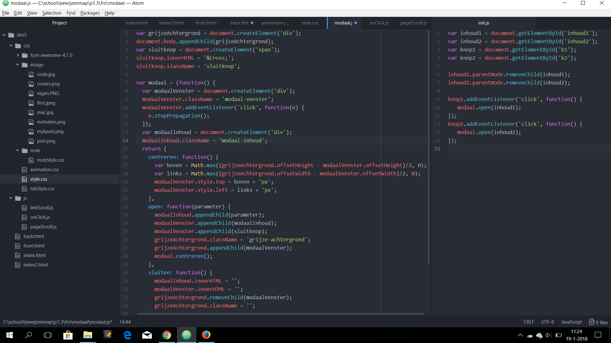
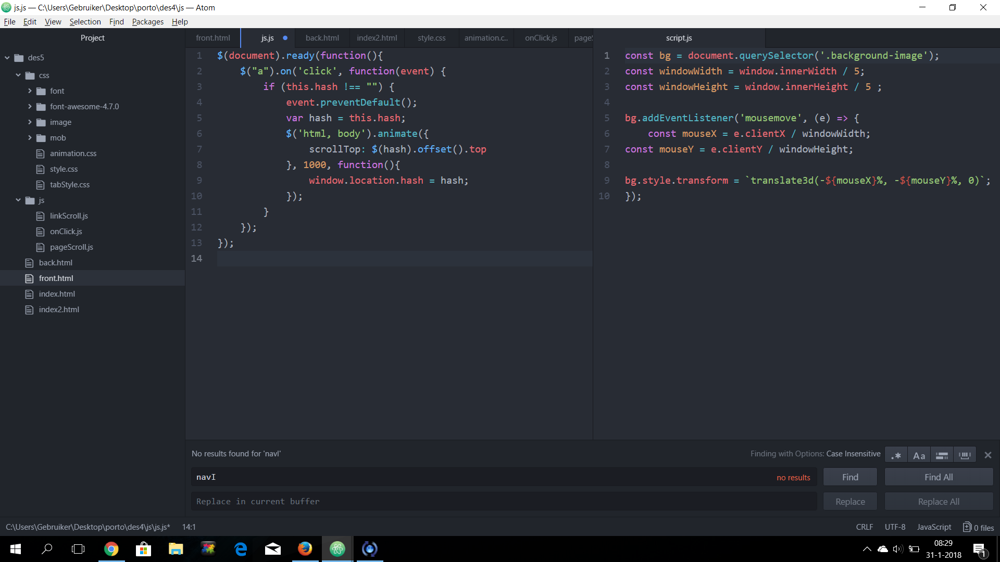

CD covers
Modaal venster
De opdracht was om een modaal venster te maken.
Wat ik doe ik vul mijn variabelen dan
stop ik een functie in mijn variabele die
een classnaam mee geeft een event dan
maak ik een div en geef die een class
naam dan bereken ik de margin dan koppel
ik de parents geef mijn variabele een
class naam en roep dan de vorige functie
aan dan maak ik nog een functie die
de inhuod en het venster een lege
waarden geeft en van de achtergrond
het child weg halen met de class naam.
Metselen
De opdracht was om een aantal images
allemaal achter elkaar te zetten over het
hele scherm en als je op een knop drukt dat
er meer kwamen.
Wat ik doe is ik vul eerst mijn variabele
maak ik een array aan roep ik een while aan
die zegt als de lengte van de array groter
is dan 0 ik maak daarna twee variabele met
een willekeurig getal keer de lengte van de array
dan stop ik dat getal in mijn array dan return
ik de nieuwe array ik maak daarna een element
geef het een class en zeg dat uitvoer de parent
is daarna pak ik mijn gemaakte element
en return het als een
array dan create ik ook mij image geef de waardes mee
van de source en alt dan return mijn image maak nu
twee variabele vul ze allebij met een functie
zeg dan dat afb mijn parent is van rij voeg dan
een event toe zeg dan als mijn variabel groter
of gelijk aan mijn anderen is dat er een class
word toegevoegd geef de nieuwe hoogte mee en
maak de rij en dan roep ik de de functies aan.
Boot
De opdracht was om een bootje van de ene
kant naar de anderen kant te laten gaan.
Wat ik doe ik maak mijn variabelen ik selecteer
mijn div en zeg als mijn variabel even groot is
en zeg dat mijn variabelen waarden min is en zeg
dat mijn variabel hoger of gelijk aan mijn 2e variabel
geef daarna mijn variabel mee aan mijn div's style.
1e Portofolio
Dit was mijn eerste ontwerp voor mijn portofolio.
Wat ik doe in het script.js eerst selecteer
ik mijn image daarna vul ik mijn variabelen
met de window width ik zeg daarna als de muis(e)
maak ik nieuwe variabelen aan die de muis x/y
delen door de window width en height daarna geef
ik de nieuwe variabelen mee aan mijn image.